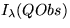
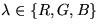

Els models d'il·luminació simulen l'efecte d'interacció de la llum amb els objectes de l'escena per a determinar el color de cada punt Q de la superfície d'un objecte que es desitgi calcular.
Un model d'il·luminació exacta hauria de produir el diagrama espectral de la llum que arriba a l'observador procedent del punt Q. A tal efecte, hauria de considerar tots els factors que afecten a la seva obtenció: llum procedent de focus i altres objectes, atenuació de la llum en el medi de transmissió i per objectes,...
Ara bé, l'avaluació completa de tots aquests factors per a cada punt d'una superfície i per les diferents longituds d'ona que integren la llum es computacionalment costós.
Una primera simplificació consisteix en considerar no tot l'espectre de la llum sinó només les energies corresponents a les llums vermella, verda i blava que són les que s'utilitzen com a model de color en el computador. Així,  indicarà les intensitats de llum vermella, verda i blava que arriba a Obs procedent de Q (). Aquest valor es codifica normalitzat en l'interval [0,1].
Altres simplificacions s'obtenen en imposar hipòtesis restrictives als diferents factors que afecten al color de la llum, per exemple: medis no participatius, focus puntuals,...
Aquestes simplificacions permeten deduir els models d'il·luminació més àmpliament utilitzats en medis no participatius (la llum es transmet en el buit) que es poden classificar en tres grups: models locals, models de traçat de raig i models transaccionals o de Radiositat (veiem-los en els següents subapartats).